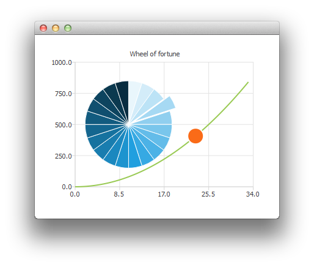

Customizing Chart Views with QML

Note: This is part of the Charts with QML Gallery example.
Here we show you how to create a wheel of fortune by customizing a pie series.
First we create the ChartView and a couple of series.
ChartView { id: chartView anchors.fill: parent title: "Wheel of Fortune" legend.visible: false antialiasing: true PieSeries { id: wheelOfFortune horizontalPosition: 0.3 } SplineSeries { id: splineSeries } ScatterSeries { id: scatterSeries } }
The application data is generated in Component.onCompleted of the main rectangle:
Component.onCompleted: { __intervalCoefficient = Math.random() + 0.25; for (var i = 0; i < 20; i++) wheelOfFortune.append("", 1); var interval = 1; for (var j = 0; interval < 800; j++) { interval = __intervalCoefficient * j * j; splineSeries.append(j, interval); } chartView.axisX(scatterSeries).max = j; chartView.axisY(scatterSeries).max = 1000; }
The following customizations are done repeatedly with a timer. To highlight one of the pie slices at time we modify its exploded property:
wheelOfFortune.at(index).exploded = false; root.__activeIndex++; index = root.__activeIndex % wheelOfFortune.count; wheelOfFortune.at(index).exploded = true;
Then an animation using a scatter series with one data point:
scatterSeries.clear(); scatterSeries.append(root.__activeIndex, interval); scatterSeries.color = Qt.tint(scatterSeries.color, "#05FF0000"); scatterSeries.markerSize += 0.5;
When the wheel of fortune has stopped, we make the active slice blink by modifying its colors.
// Switch the colors of the slice and the border wheelOfFortune.at(index).borderWidth = 2; switchColor = wheelOfFortune.at(index).borderColor; wheelOfFortune.at(index).borderColor = wheelOfFortune.at(index).color; wheelOfFortune.at(index).color = switchColor;